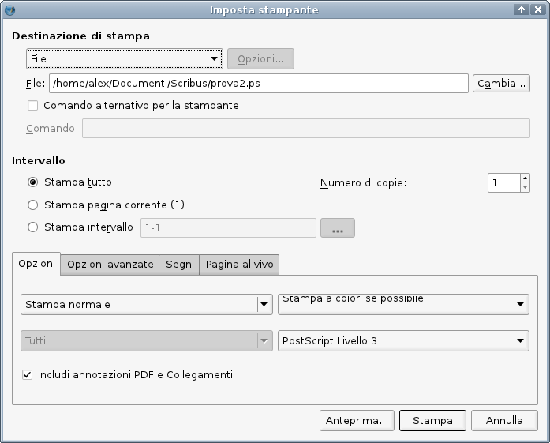
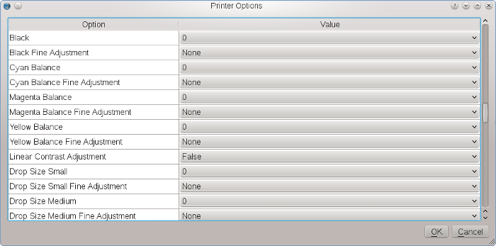

Se la vostra stampante e il sottosistema di stampa del vostro sistema operativo permettono la stampa diretta dall'interno di Scribus, specialmente se vi servite di una stampante PostScript, Scribus offre alcune funzioni per la stampa che non si trovano nella maggior parte degli altri programmi. È importante osservare nuovamente che la disponibilità di queste funzioni dipende dalla qualità del driver della stampante. Inoltre, almeno su Windows, dove Scribus utilizza la “Graphical Device Interface”, dipende anche dalle funzioni che il produttore ha reso accessibili attraverso il driver. Per ragioni di usabilità, il numero di opzioni potrebbe essere stato intenzionalmente limitato su questo sistema operativo. Di seguito descriveremo la finestra di dialogo Stampa per i sistemi operativi che utilizzano il sistema di stampa CUPS (Linux, *BSD, UNIX, Mac OS X).
|  |
La prima cosa che dovete decidere qui è se volete effettivamente stampare su carta (o su un supporto fisico simile) oppure “stampare” su un file, cioè creare un file PostScript, che in seguito può essere inviato a una tipografia in grado di utilizzare il PDF. Se non è installato alcun driver per la stampa, creare un file PostScript sarà la sola opzione disponibile.
La casella “Comando alternativo per la stampa” è importante solo su sistemi Linux e UNIX. Un esempio del suo utilizzo è l'uso di una specifica finestra di dialogo per la stampa in un particolare ambiente desktop, poiché tale finestra di dialogo potrebbe offrire funzioni aggiuntive (come esportazione PDF basata su Ghostscript), oppure un insieme ridotto di funzioni, che può facilitare la stampa diretta da Scribus per l'utente medio.
Come accennato prima, i sistemi operativi che usano CUPS (Common UNIX Printing System) per la stampa, di solito offrono la possibilità di utilizzare un gran numero di funzioni per una data stampante, molte delle quali sono importanti solo per gli utenti esperti. Come si vede nella schermata sotto, tra questi vi sono il bilanciamento dei colori dell'inchiostro o le dimensioni delle goccioline di inchiostro. Se avete bisogno di un elevato livello di controllo sulla stampante locale, è consigliabile che vi serviate di un driver Gutenprint, purché ne esista uno per la vostra stampante. Scribus permette di utilizzare direttamente le funzioni dei driver Gutenprint via CUPS.
|  |
Le opzioni di questa parte della finestra di dialogo dovrebbero esservi familiari, almeno se avete mai stampato da un elaboratore di testi.
Probabilmente non si sbaglia dicendo che la maggior parte delle funzioni nella parte inferiore della finestra di dialogo sono importanti solo per utenti professionali, il che significa che l'utente “medio” può ignorarle. Ciò significa anche che non è necessario che le spieghiamo in dettaglio qui, poiché esse sono (o dovrebbero essere) ovvie per gli utenti professionali.